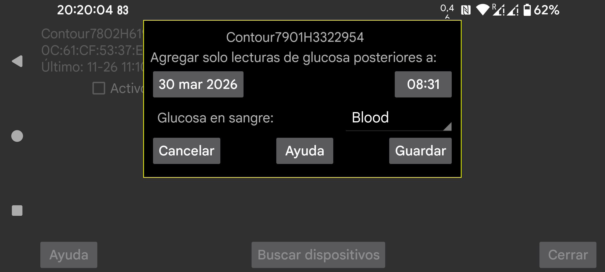

Juggluco solo añade valores de glucosa con una marca de tiempo posterior a la fecha y hora indicadas. Cambia la fecha y la hora a un momento más reciente si ya existen valores anteriores en Juggluco.
Selecciona la etiqueta para la glucosa en sangre.
La primera vez debes poner el glucómetro en modo de emparejamiento, por ejemplo manteniendo pulsado el botón del medidor apagado hasta que parpadee una luz azul.